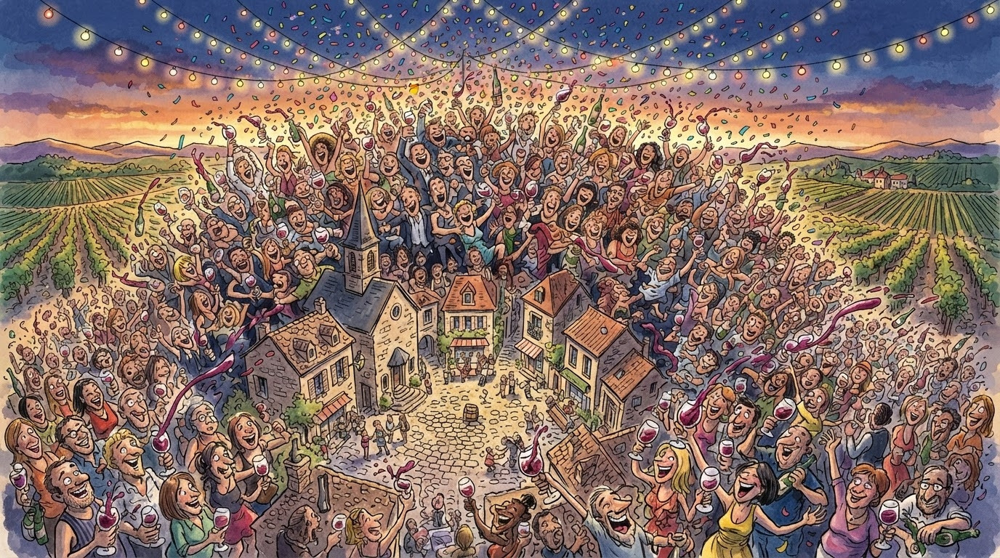

Turizëm
Gazeta Satirike e Kosovës dhe Shqipërisë — lajme që nuk duhet t'i besoni, por i lexoni gjithsesi
Organizatorët thonë "pritshmëritë u tejkaluan" — redaksia jonë shton se edhe kapaciteti i parkingjeve u tejkalua, por atë askush nuk e llogariti.

Rahoveci, qytet me popullsi disa dhjetëra herë më të vogël se numri i vizitorëve që mori për tri ditë, ka zbuluar formulën e vet demografike: një banor lokal për çdo grup turistësh — raport që statisticienët e quajnë "densiteti i festivalit", ndërsa banorët lokalë e quajnë thjesht "muaji kur s'gjejmë parking".
"Ne kemi pritur një numër më të vogël, por fluksi ka vazhduar pandërprerë", tha një organizator, duke përshkruar një fenomen që ekonomistët tashmë e krahasojnë me çdo projeksion buxhetor shtetëror: gjithmonë "më shumë se sa e menduam", vetëm në kahje të kundërta.
"Pritshmëritë tona janë tejkaluar çdo vit — kjo tashmë e bën 'tejkalimin' pritshmërinë tonë zyrtare." — një zëdhënës i festivalit, duke përsëritur fjalën "tejkalim" për herë të dymbëdhjetë
Sipas llogaritjeve lokale jozyrtare, çdo vizitor konsumoi mesatarisht "disa gota" verë vendore — një shifër që redaksia jonë e konsideron shkencërisht të pasaktë, por emocionalisht të drejtë. Artistët e ftuar konfirmuan se atmosfera ishte "e jashtëzakonshme", term që në fushën e festivaleve shqiptare përdoret çdo vit pa përjashtim.
Banorët e Rahovecit, ndërkohë, kanë filluar tashmë të planifikojnë edicionin e ardhshëm, me një kërkesë të vetme drejtuar komunës: një rrugë shtesë hyrëse, që të mos duhet çdo vizitor të hyjë nga e njëjta rrugë njëkohësisht.
Deri në edicionin e 13-të, redaksia jonë propozon një titull të ri për festivalin: "Hardh Fest — aq i madh sa vetë qyteti humbet lojën e vet të emrit".